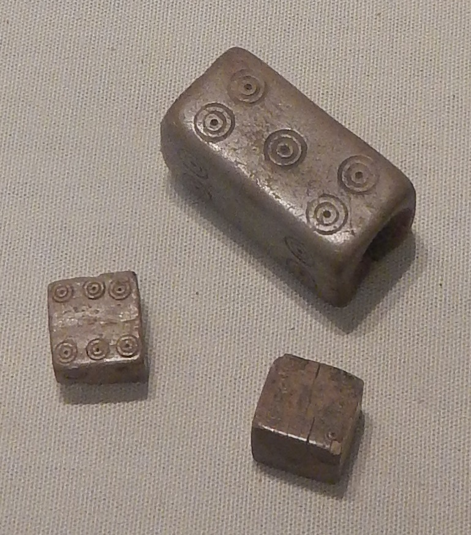
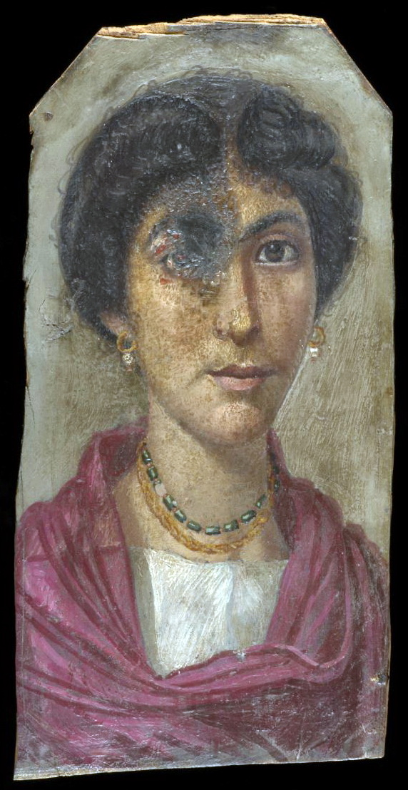
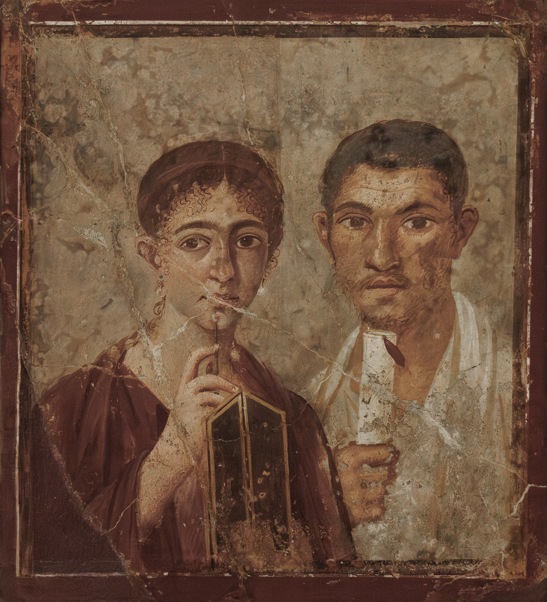
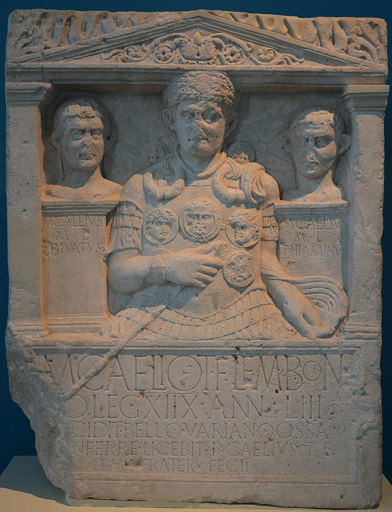
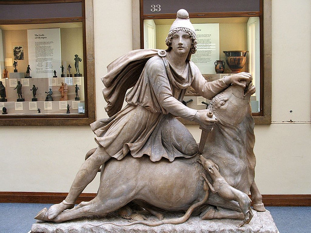

Your Life Under RomeS · P · Q · R
A probabilistic portrait of who you would have been, had you been born somewhere in the Roman world between 100 BC and 420 AD.
Cast the Dice
A throw of 1 to 1000 — where would fortune have placed you?

How to read the probability weights: Each profile is assigned a range out of 1,000. If you rolled a random number from 1 to 1,000, these ranges reflect roughly how likely you'd land in each life — based on demographics, social structure, and what historians estimate about population composition across the empire's lifespan. The ten profiles together account for about 940 of 1,000 possible lives. The remaining ~60 represent categories not profiled here: gladiators, priests, prostitutes, bandits, nomadic pastoralists on the frontier, miners, imperial bureaucrats, and the many children who died before age five and never lived long enough to have a "story" in the adult sense.

Titus Caecilius
Peasant Smallholder
Central Italy · Late Republic · 105–42 BC
Roll 1–185 · 185 / 1000
Kalasiris
Agricultural Slave
Sicily · Late Republic · 135–86 BC
Roll 186–325 · 140 / 1000
Helene
Provincial Woman
Roman Egypt · Antonine era · 148–198 AD
Roll 326–500 · 175 / 1000
Petronia Iusta
Urban Plebeian Woman
Rome · Flavian–Trajanic · 55–112 AD
Roll 501–590 · 90 / 1000
Gaius Vibius Celer
Legionary
Rhine frontier · Augustan–Tiberian · 12 BC–31 AD
Roll 591–620 · 30 / 1000
Publius Valerius Messalla
Senator
Rome · Augustan–Claudian · 20 BC–54 AD
Roll 621–623 · 3 / 1000
Successus
Freedman and Tavern Keeper
Pompeii · Early Empire · 32–79 AD
Roll 624–678 · 55 / 1000
Boudiga
Rural Provincial Woman
Roman Britain · Claudian–Trajanic · 42–103 AD
Roll 679–808 · 130 / 1000
Aurelius Diza
Auxiliary Cavalry Trooper
Danube frontier · Crisis of the 3rd c. · 233–268 AD
Roll 809–833 · 25 / 1000
Flavius Marcellinus
Minor Bureaucrat
Constantinople · Late Empire · 375–421 AD
Roll 834–905 · 72 / 1000The remaining 95 of 1000 — Priests, gladiators, prostitutes, bandits, miners, nomadic pastoralists, imperial bureaucrats — and the many children who died before age five and never lived long enough to have a story in the adult sense.